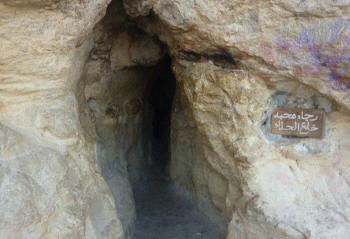
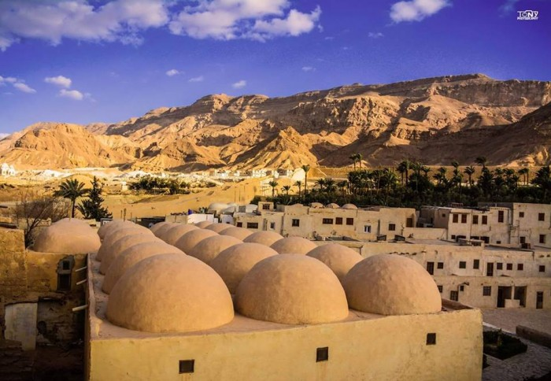

ابواب دخول دير الانبا انطونيوس
+ دير الأنبا انطونيوس - البحر الأحمر +
-
دير الأنبا أنطونيوس العامر بالبرية الشرقية بالبحر الأحمر، يعد هذا الدير هو أقدم دير فى العالم، حيث يحمل الدير اسم القديس العظيم الانبا انطونيوس وهو أول راهب فى العالم وهو الذي أسس حياة الرهبنة، ويطلق عليه لقب ” ابو الرهبان “، وسوف نقدم لكم نبذة عن هذا الدير الذي يقصده الزوار والسائحين من جميع أنحاء العالم.

الانبا يسطس رئيس دير الانبا انطونيوس وهو يحمل جسد الانبا يوساب الأبح فى عيده داخل كنيسة الرسل.
+ داخل دير الانبا انطونيوس +
- كنيسة الرسل
-
عند الدخول الي الدير، والمرور من الابواب القديمة للدير يوجد كنيسة الرسل التي تحمل الكثر من اجساد القديسين ، فيوجد بها جسد القديس الانبا يوساب الابح الذى لم يتحلل جسده حتى الآن وموضع فى مقصورة من الزجاج بداخل هذه الكنيسة، ويحمله رئيس الدير ” الأنبا يسطس ” فى عيده فى وسط زفة مهيبة تعلوها الفرحة على اوجه من يشاهدها. ويوجد بها ايضاً جسد القديس يسطس الانطونى كاملاً.

عين المياه بدير الانبا انطونيوس.
- عين المياه
-
داخل الدير نجد عين المياه التي ينفجر منها المياه من وسط الصخور فى وسط الصحراء ولم ينقطع منها المياه، على الرغم من ان الدير يرتفع عن سطح البحر بمقدار 450 متراً، ويرجع تاريخ هذه العين إلى نحو 1700 سنة، ويحدث من خلالها معجزات كثيرة، وتعتبر مزاراً سياحياً للكثير من السياح حول العالم.

كنيسة الصليب بدير الأنبا انطونيوس
- كنيسة الصليب
-
تعتبر هذه الكنيسة من اجدد الكنائس فى دير الانبا انطونيوس، ولكن هذه الكنيسة تختلف كلية عن باقى الكنائس، فهذه الكنيسة محفورة بالكامل داخل الجبل، وبها صور للقديسين منحوتة فى الجبل بشكل رائع.
- مقابر الرهبان
-
ويوجد بداخل الدير مقابر للرهبان يطلق عليها ” الطافوس ” وهي التي يدفن بها الراهب بعد انقضاء حياته على الأرض، وتوجد لافتة مكتوب عليها ” أكملت الجهاد الحسن، أكملت السعي، وحفظت الايمان ” موضوعة على مقبرة الرهبان بالدير.

مغارة الأنبا انطونيوس
- مغارة الأنبا انطونيوس
-
وتعتبر مغارة الانبا انطونيوس هى أشهر مكان فى الدير، ويأتى اليه الزوار من جميع أنحاء العالم ليصعدوا إليها ويأخذوا منها البركة، فيصعد الزوار الى المغارة على سلالم صنعت فى الجبل وتبعد المغارة عن الأرض مسافة 45 دقيقة صعود، وعندما يصعد الزوار الى قمة الجبل بعد مشقة وصعوبة يدخلون فى ممر رفيع جدا فى وسط الجبل حتى ينتهى هذا الممر بتجويف بداخل الجبل لا يزيد طول المغارة عن خمسة أمتار، يقوم الرهبان بالصلاة فى هذه المغارة يومياً على أضواء الشموع، فيصلى فيها الأب لعازر الانطونى يوميا فى هذه المغارة الساعة الثانية عشر من منتصف الليل، وفى بعض الأحيان يصلي فيها الراهب تيموثاوس الانطونى.

قلالي الرهبان بدير الأنبا انطونيوس
- قلالى الرهبان
-
ويوجد بداخل الدير قلالى الرهبان حيث يتخذ كل راهب لنفسه قلاية خاصة به، يوضع بداخلها كل متعلقات الراهب الشخصية، ويمارس بها قانونه الروحى، كالصلاة والقراءة فى الكتاب المقدس، وغير مسموح للزوار بالاقتراب من منطقة القلالى وذلك لعدم إزعاج الرهبان فى صلاتهم، حيث ان الراهب قد ترك العالم وذهب إلى الدير لكي يتعبد الى الله.